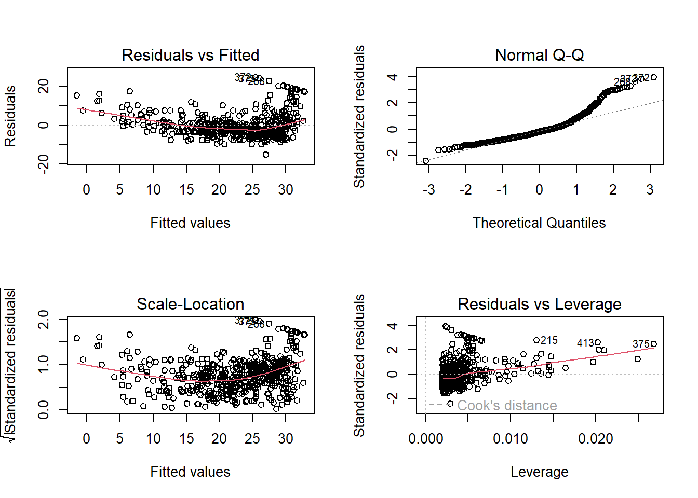

library(MASS)
library(ISLR2)
Attaching package: 'ISLR2'The following object is masked from 'package:MASS':
BostonEn esencia, el aprendizaje estadístico se refiere a un conjunto de enfoques para estimar f (una función) y puede implicar más de una variable de entrada.
Hay dos razones principales por las que podemos querer estimar f: predicción e inferencia.
Siempre supondremos que hemos observado un conjunto de n puntos de datos diferentes. Estas observaciones se denominan datos de entrenamiento porque las utilizaremos para entrenar, o enseñar, a nuestro método a estimar f. Nuestros datos de entrenamiento consisten en {(x1,y1),(x2,y2),...,(xn,yn)}dondexi =(xi1,xi2,...,xip)T.
Nuestro objetivo es aplicar un método de aprendizaje estadístico a los datos de entrenamiento para estimar la función f desconocida.
En términos generales, la mayoría de los métodos de aprendizaje estadístico para esta tarea pueden caracterizarse como paramétricos o no paramétricos.
Los métodos paramétricos implican un planteamiento basado en modelos de dos pasos.
1. En primer lugar, hacemos una suposición sobre la forma funcional de f.
2. Una vez seleccionado el modelo, necesitamos un procedimiento que utilice los datos de entrenamiento para ajustar o entrenar el modelo.
Los métodos no paramétricos no hacen suposiciones explícitas sobre la forma funcional de f. En su lugar, buscan una estimación de f que se acerque lo más posible a los puntos de datos sin ser demasiado aproximada o irregular.
La mayoría de los problemas de aprendizaje estadístico pertenecen a dos categorías: supervisados o no supervisados. Aunque se trata de un tema interesante, queda fuera del alcance de este libro debido a que muchos problemas caen naturalmente dentro de los paradigmas de aprendizaje supervisado o no supervisado.
Las variables pueden caracterizarse como cuantitativas o cualitativas. Las variables cuantitativas toman valores numéricos. En cambio, las variables cualitativas toman valores en una de K clases o categorías diferentes. Solemos referirnos a los problemas con una respuesta cuantitativa como problemas de regresión, mientras que los que implican una respuesta cualitativa suelen denominarse problemas de clasificación. Sin embargo, la distinción no siempre es tan clara.
Seleccionar el mejor enfoque puede ser uno de los mayores retos a la hora de llevar a la práctica el aprendizaje estadístico.
Para evaluar el rendimiento de un método de aprendizaje estadístico en un conjunto de datos determinado, necesitamos alguna forma de medir hasta qué punto sus predicciones se ajustan realmente a los datos observados. Es decir, necesitamos cuantificar hasta qué punto el valor de respuesta predicho para una observación dada se aproxima al valor de respuesta verdadero para esa observación.
La varianza se refiere a la cantidad en que fˆ cambiaría si la estimáramos utilizando un conjunto de datos de entrenamiento diferente. Sin embargo, si un método tiene una varianza elevada entonces pequeños cambios en los datos de entrenamiento pueden dar lugar a grandes cambios en f. En general, los métodos estadísticos más flexibles tienen mayor varianza.
Es posible demostrar que la tasa de error de prueba dada en se minimiza, en promedio, por un clasificador muy simple que asigna cada observación a la clase más probable, dados sus valores predictores. El clasificador de Bayes produce la tasa de error de prueba más baja posible, denominada tasa de error de Bayes.
Dado un in- teger positivo K y una observación de prueba x0, el clasificador KNN identifica en primer lugar los K puntos de los datos de entrenamiento más cercanos a x0, representados por N0.
Tanto en la regresión como en la clasificación, elegir el nivel correcto de flexibilidad es fundamental para el éxito de cualquier método de aprendizaje estadístico. El equilibrio entre sesgo y varianza, y la forma de U resultante en el error de prueba, pueden hacer que esta tarea sea difícil.
En concreto, la regresión lineal es una herramienta útil para predecir una respuesta cuantitativa.
La regresión lineal simple hace honor a su nombre: es un enfoque muy sencillo para predecir una respuesta cuantitativa Y a partir de una única variable de predicción X.
Estimación de los coeficientes
Evaluación de la precisión de las estimaciones de los coeficientes
Evaluación de la precisión del modelo
Residual Standard Error
R2 Statistic
Una opción es realizar tres regresiones lineales simples separadas, cada una de las cuales utilice un medio publicitario diferente como predictor. Sin embargo, el enfoque de ajustar un modelo de regresión lineal simple separado para cada predictor no es del todo satisfactorio.
En lugar de ajustar un modelo de regresión lineal simple separado para cada predictor, un enfoque mejor es ampliar el modelo de regresión lineal simple para que pueda acomodar directamente múltiples predictores. Podemos hacerlo dando a cada predictor un coeficiente de pendiente separado en un único modelo.
Algunas cuestiones importantes
Primera: ¿Existe una relación entre la respuesta y los predictores?
Dos: Decidir las variables importantes
Tres: Ajuste del modelo
Cuatro: Predicciones
Hay varios predictores cuantitativos: edad, tarjetas, educación, ingresos, límite y calificación.
Predictores con sólo dos niveles
Predictores cualitativos con más de dos niveles
El modelo de regresión lineal estándar (3.19) proporciona resultados interpretables y funciona bastante bien en muchos problemas del mundo real. Sin embargo, hace varias suposiciones muy restrictivas que a menudo se incumplen en la práctica. Dos de los supuestos más importantes establecen que la relación entre los predictores y la respuesta son aditivos y lineales. El supuesto de aditividad significa que la asociación entre un predictor Xj y la respuesta Y no depende de los valores de los demás predictores.
Eliminación del supuesto aditivo
Relaciones no lineales
Cuando ajustamos un modelo de regresión lineal a un conjunto de datos concreto, pueden surgir muchos problemas. Los más comunes son los siguientes
1. No linealidad de las relaciones respuesta-predictor.
2. Correlación de los términos de error.
3. Varianza no constante de los términos de error.
4. Valores atípicos.
5. Puntos de alto apalancamiento.
6. Colinealidad.
La regresión lineal es un ejemplo de enfoque paramétrico porque asume una forma funcional lineal para f(X). Los métodos paramétricos tienen varias ventajas. Suelen ser fáciles de ajustar, porque sólo es necesario estimar un pequeño número de coeficientes. En el caso de la regresión lineal, los coeficientes tienen interpretaciones sencillas y las pruebas de significación estadística pueden realizarse fácilmente. Pero los métodos paramétricos tienen una desventaja: por construcción, hacen fuertes suposiciones sobre la forma de f(X). Por el contrario, los métodos no paramétricos no asumen explícitamente una forma paramétrica para f(X) y, por lo tanto, proporcionan un enfoque alternativo y más flexible para realizar la regresión.
Por regla general, los métodos paramétricos tienden a superar a los no paramétricos cuando el número de observaciones por predictor es pequeño.
Incluso cuando la dimensión es pequeña, podríamos preferir la regresión lineal a KNN desde el punto de vista de la interpretabilidad. Si el MSE de prueba de KNN es sólo ligeramente inferior al de la regresión lineal, podríamos estar dispuestos a renunciar a un poco de precisión en la predicción por el bien de un modelo simple que puede ser descrito en términos de unos pocos coeficientes, y para el que los valores p están disponibles.
La función library( ), se utiliza para cargar bibliotecas, o grupos de funciones.
library(MASS)
library(ISLR2)
Attaching package: 'ISLR2'The following object is masked from 'package:MASS':
BostonRegresión lineal simple
head(Boston) crim zn indus chas nox rm age dis rad tax ptratio lstat medv
1 0.00632 18 2.31 0 0.538 6.575 65.2 4.0900 1 296 15.3 4.98 24.0
2 0.02731 0 7.07 0 0.469 6.421 78.9 4.9671 2 242 17.8 9.14 21.6
3 0.02729 0 7.07 0 0.469 7.185 61.1 4.9671 2 242 17.8 4.03 34.7
4 0.03237 0 2.18 0 0.458 6.998 45.8 6.0622 3 222 18.7 2.94 33.4
5 0.06905 0 2.18 0 0.458 7.147 54.2 6.0622 3 222 18.7 5.33 36.2
6 0.02985 0 2.18 0 0.458 6.430 58.7 6.0622 3 222 18.7 5.21 28.7La función lm( ), sirve para ajustar un modelo de regresión lineal simple
lm.fit <- lm(medv ~ lstat , data = Boston)
attach (Boston)
lm.fit <- lm(medv ~ lstat)Si usamos lm.fit, obtendremos información básica del modelo; sin embargo, el summary( ), para información más detallada
lm.fit
Call:
lm(formula = medv ~ lstat)
Coefficients:
(Intercept) lstat
34.55 -0.95 summary(lm.fit)
Call:
lm(formula = medv ~ lstat)
Residuals:
Min 1Q Median 3Q Max
-15.168 -3.990 -1.318 2.034 24.500
Coefficients:
Estimate Std. Error t value Pr(>|t|)
(Intercept) 34.55384 0.56263 61.41 <2e-16 ***
lstat -0.95005 0.03873 -24.53 <2e-16 ***
---
Signif. codes: 0 '***' 0.001 '**' 0.01 '*' 0.05 '.' 0.1 ' ' 1
Residual standard error: 6.216 on 504 degrees of freedom
Multiple R-squared: 0.5441, Adjusted R-squared: 0.5432
F-statistic: 601.6 on 1 and 504 DF, p-value: < 2.2e-16La función names( ), sirve para encontrar otras piezas de información en el almacenamiento de lm.fit
names(lm.fit) [1] "coefficients" "residuals" "effects" "rank"
[5] "fitted.values" "assign" "qr" "df.residual"
[9] "xlevels" "call" "terms" "model" Podemos ocupar el extractor de funciones “coef( )” para acceder a ellos.
coef(lm.fit)(Intercept) lstat
34.5538409 -0.9500494 La función confint( ), sirve para obtener intervalos de confianza para coeficientes estimados
confint(lm.fit) 2.5 % 97.5 %
(Intercept) 33.448457 35.6592247
lstat -1.026148 -0.8739505La función predict( ), sirve para producir intervalos de confianza e intervalos de predicción.
predict(lm.fit, data.frame(lstat= (c(5, 10, 15))), interval = "confidence") fit lwr upr
1 29.80359 29.00741 30.59978
2 25.05335 24.47413 25.63256
3 20.30310 19.73159 20.87461predict(lm.fit, data.frame(lstat= (c(5, 10, 15))), interval = "prediction") fit lwr upr
1 29.80359 17.565675 42.04151
2 25.05335 12.827626 37.27907
3 20.30310 8.077742 32.52846Para obtener un intervalo de confianza para las estimaciones de los coeficientes, podemos usar abline( ).
La función abline( ), dibuja una línea.
plot(lstat, medv)
abline(lm.fit)
la función abline(a, b), sirve para dibujar una línea con intercepción a y pendiente b. El comando lwd hace que el ancho de la regresión lineal aunmente según el número que se determine.
“pch” crea diferentes símbolos de trazado.
plot(lstat, medv)
abline (lm.fit, lwd = 3)
abline (lm.fit, lwd = 3, col = "red" )
plot (lstat , medv , col = " red ")
plot (lstat , medv , pch = 20)
plot (lstat , medv , pch = "+")
plot (1:20, 1:20, pch = 1:20)
Las funciones par( ), mfrow( ) sirven para mostrar cuatro gráficos juntos.
par (mfrow = c(2, 2))
plot (lm.fit)
La función residuals( ), sirve para calcular los residuos de un ajuste de regresión lineal, mientras que la función rstudent( ), devolverá los residuos estudentizados.
plot(predict(lm.fit), residuals(lm.fit))
plot(predict(lm.fit), rstudent(lm.fit))
La función hatvalues( ), puede calcular cualquier número de predictores. La función “which.max” identifica el índice del elemento más grande de un vector.
plot(hatvalues(lm.fit))
which.max(hatvalues(lm.fit))375
375 La función lm( ), sirve para ajustar un modelo de regresión lineal múltiple usando mínimos cuadrados.
lm.fit <- lm(medv ~ lstat + age , data = Boston)
summary (lm.fit)
Call:
lm(formula = medv ~ lstat + age, data = Boston)
Residuals:
Min 1Q Median 3Q Max
-15.981 -3.978 -1.283 1.968 23.158
Coefficients:
Estimate Std. Error t value Pr(>|t|)
(Intercept) 33.22276 0.73085 45.458 < 2e-16 ***
lstat -1.03207 0.04819 -21.416 < 2e-16 ***
age 0.03454 0.01223 2.826 0.00491 **
---
Signif. codes: 0 '***' 0.001 '**' 0.01 '*' 0.05 '.' 0.1 ' ' 1
Residual standard error: 6.173 on 503 degrees of freedom
Multiple R-squared: 0.5513, Adjusted R-squared: 0.5495
F-statistic: 309 on 2 and 503 DF, p-value: < 2.2e-16En lugar de escribir todas las variables podemos utilizar la siguiente abreviatura.
lm.fit <- lm(medv ~ ., data = Boston)
summary (lm.fit)
Call:
lm(formula = medv ~ ., data = Boston)
Residuals:
Min 1Q Median 3Q Max
-15.1304 -2.7673 -0.5814 1.9414 26.2526
Coefficients:
Estimate Std. Error t value Pr(>|t|)
(Intercept) 41.617270 4.936039 8.431 3.79e-16 ***
crim -0.121389 0.033000 -3.678 0.000261 ***
zn 0.046963 0.013879 3.384 0.000772 ***
indus 0.013468 0.062145 0.217 0.828520
chas 2.839993 0.870007 3.264 0.001173 **
nox -18.758022 3.851355 -4.870 1.50e-06 ***
rm 3.658119 0.420246 8.705 < 2e-16 ***
age 0.003611 0.013329 0.271 0.786595
dis -1.490754 0.201623 -7.394 6.17e-13 ***
rad 0.289405 0.066908 4.325 1.84e-05 ***
tax -0.012682 0.003801 -3.337 0.000912 ***
ptratio -0.937533 0.132206 -7.091 4.63e-12 ***
lstat -0.552019 0.050659 -10.897 < 2e-16 ***
---
Signif. codes: 0 '***' 0.001 '**' 0.01 '*' 0.05 '.' 0.1 ' ' 1
Residual standard error: 4.798 on 493 degrees of freedom
Multiple R-squared: 0.7343, Adjusted R-squared: 0.7278
F-statistic: 113.5 on 12 and 493 DF, p-value: < 2.2e-16La función vif( ), puede utilizarse para calcular los factores de inflación de la varianza, además debe instalarse el package “car”.
library (car)Loading required package: carDatavif (lm.fit) crim zn indus chas nox rm age dis
1.767486 2.298459 3.987181 1.071168 4.369093 1.912532 3.088232 3.954037
rad tax ptratio lstat
7.445301 9.002158 1.797060 2.870777 Ejecutar una regresión lineal excluyendo un predictor, en este caso sería la edad.
lm.fit1 <- lm(medv ~ . - age , data = Boston)
summary (lm.fit1)
Call:
lm(formula = medv ~ . - age, data = Boston)
Residuals:
Min 1Q Median 3Q Max
-15.1851 -2.7330 -0.6116 1.8555 26.3838
Coefficients:
Estimate Std. Error t value Pr(>|t|)
(Intercept) 41.525128 4.919684 8.441 3.52e-16 ***
crim -0.121426 0.032969 -3.683 0.000256 ***
zn 0.046512 0.013766 3.379 0.000785 ***
indus 0.013451 0.062086 0.217 0.828577
chas 2.852773 0.867912 3.287 0.001085 **
nox -18.485070 3.713714 -4.978 8.91e-07 ***
rm 3.681070 0.411230 8.951 < 2e-16 ***
dis -1.506777 0.192570 -7.825 3.12e-14 ***
rad 0.287940 0.066627 4.322 1.87e-05 ***
tax -0.012653 0.003796 -3.333 0.000923 ***
ptratio -0.934649 0.131653 -7.099 4.39e-12 ***
lstat -0.547409 0.047669 -11.483 < 2e-16 ***
---
Signif. codes: 0 '***' 0.001 '**' 0.01 '*' 0.05 '.' 0.1 ' ' 1
Residual standard error: 4.794 on 494 degrees of freedom
Multiple R-squared: 0.7343, Adjusted R-squared: 0.7284
F-statistic: 124.1 on 11 and 494 DF, p-value: < 2.2e-16Tambien se puede utilizar la función update( ).
lm.fit1 <- update (lm.fit , ~ . - age)summary (lm(medv ~ lstat * age , data = Boston))
Call:
lm(formula = medv ~ lstat * age, data = Boston)
Residuals:
Min 1Q Median 3Q Max
-15.806 -4.045 -1.333 2.085 27.552
Coefficients:
Estimate Std. Error t value Pr(>|t|)
(Intercept) 36.0885359 1.4698355 24.553 < 2e-16 ***
lstat -1.3921168 0.1674555 -8.313 8.78e-16 ***
age -0.0007209 0.0198792 -0.036 0.9711
lstat:age 0.0041560 0.0018518 2.244 0.0252 *
---
Signif. codes: 0 '***' 0.001 '**' 0.01 '*' 0.05 '.' 0.1 ' ' 1
Residual standard error: 6.149 on 502 degrees of freedom
Multiple R-squared: 0.5557, Adjusted R-squared: 0.5531
F-statistic: 209.3 on 3 and 502 DF, p-value: < 2.2e-16Lm( ) puede acomodar transformaciones no lineales de los predictores, la función I( ), el uso estándar en R (poner un exponencial de 2).
lm.fit2 <- lm(medv ~ lstat + I(lstat^2))
summary (lm.fit2)
Call:
lm(formula = medv ~ lstat + I(lstat^2))
Residuals:
Min 1Q Median 3Q Max
-15.2834 -3.8313 -0.5295 2.3095 25.4148
Coefficients:
Estimate Std. Error t value Pr(>|t|)
(Intercept) 42.862007 0.872084 49.15 <2e-16 ***
lstat -2.332821 0.123803 -18.84 <2e-16 ***
I(lstat^2) 0.043547 0.003745 11.63 <2e-16 ***
---
Signif. codes: 0 '***' 0.001 '**' 0.01 '*' 0.05 '.' 0.1 ' ' 1
Residual standard error: 5.524 on 503 degrees of freedom
Multiple R-squared: 0.6407, Adjusted R-squared: 0.6393
F-statistic: 448.5 on 2 and 503 DF, p-value: < 2.2e-16La función anova( ), realiza una prueba de hipótesis comparando los dos modelos.
lm.fit <- lm(medv ~ lstat)
anova (lm.fit , lm.fit2)Analysis of Variance Table
Model 1: medv ~ lstat
Model 2: medv ~ lstat + I(lstat^2)
Res.Df RSS Df Sum of Sq F Pr(>F)
1 504 19472
2 503 15347 1 4125.1 135.2 < 2.2e-16 ***
---
Signif. codes: 0 '***' 0.001 '**' 0.01 '*' 0.05 '.' 0.1 ' ' 1par (mfrow = c(2, 2))
plot (lm.fit2)
Para crear un ajuste cúbico, podemos incluir un predictor de la forma I(x^3), para un mejor enfoque podemos utilizar la función poly( ), que crea un polinomio dentro del lm( ).
lm.fit5 <- lm(medv ~ poly (lstat , 5))
summary (lm.fit5)
Call:
lm(formula = medv ~ poly(lstat, 5))
Residuals:
Min 1Q Median 3Q Max
-13.5433 -3.1039 -0.7052 2.0844 27.1153
Coefficients:
Estimate Std. Error t value Pr(>|t|)
(Intercept) 22.5328 0.2318 97.197 < 2e-16 ***
poly(lstat, 5)1 -152.4595 5.2148 -29.236 < 2e-16 ***
poly(lstat, 5)2 64.2272 5.2148 12.316 < 2e-16 ***
poly(lstat, 5)3 -27.0511 5.2148 -5.187 3.10e-07 ***
poly(lstat, 5)4 25.4517 5.2148 4.881 1.42e-06 ***
poly(lstat, 5)5 -19.2524 5.2148 -3.692 0.000247 ***
---
Signif. codes: 0 '***' 0.001 '**' 0.01 '*' 0.05 '.' 0.1 ' ' 1
Residual standard error: 5.215 on 500 degrees of freedom
Multiple R-squared: 0.6817, Adjusted R-squared: 0.6785
F-statistic: 214.2 on 5 and 500 DF, p-value: < 2.2e-16Realizamos la transformación de un registro.
summary (lm(medv ~ log(rm), data = Boston))
Call:
lm(formula = medv ~ log(rm), data = Boston)
Residuals:
Min 1Q Median 3Q Max
-19.487 -2.875 -0.104 2.837 39.816
Coefficients:
Estimate Std. Error t value Pr(>|t|)
(Intercept) -76.488 5.028 -15.21 <2e-16 ***
log(rm) 54.055 2.739 19.73 <2e-16 ***
---
Signif. codes: 0 '***' 0.001 '**' 0.01 '*' 0.05 '.' 0.1 ' ' 1
Residual standard error: 6.915 on 504 degrees of freedom
Multiple R-squared: 0.4358, Adjusted R-squared: 0.4347
F-statistic: 389.3 on 1 and 504 DF, p-value: < 2.2e-16Los Caarseats( ) forman parte del ISRL2, los datos incluyen predictores cualitativos como “Shelveloc”, un indicador de la calidad de la ubicación de las estanterías.
head (Carseats) Sales CompPrice Income Advertising Population Price ShelveLoc Age Education
1 9.50 138 73 11 276 120 Bad 42 17
2 11.22 111 48 16 260 83 Good 65 10
3 10.06 113 35 10 269 80 Medium 59 12
4 7.40 117 100 4 466 97 Medium 55 14
5 4.15 141 64 3 340 128 Bad 38 13
6 10.81 124 113 13 501 72 Bad 78 16
Urban US
1 Yes Yes
2 Yes Yes
3 Yes Yes
4 Yes Yes
5 Yes No
6 No Yeslm.fit <- lm(Sales ~ . + Income:Advertising + Price:Age ,
data = Carseats)
summary (lm.fit)
Call:
lm(formula = Sales ~ . + Income:Advertising + Price:Age, data = Carseats)
Residuals:
Min 1Q Median 3Q Max
-2.9208 -0.7503 0.0177 0.6754 3.3413
Coefficients:
Estimate Std. Error t value Pr(>|t|)
(Intercept) 6.5755654 1.0087470 6.519 2.22e-10 ***
CompPrice 0.0929371 0.0041183 22.567 < 2e-16 ***
Income 0.0108940 0.0026044 4.183 3.57e-05 ***
Advertising 0.0702462 0.0226091 3.107 0.002030 **
Population 0.0001592 0.0003679 0.433 0.665330
Price -0.1008064 0.0074399 -13.549 < 2e-16 ***
ShelveLocGood 4.8486762 0.1528378 31.724 < 2e-16 ***
ShelveLocMedium 1.9532620 0.1257682 15.531 < 2e-16 ***
Age -0.0579466 0.0159506 -3.633 0.000318 ***
Education -0.0208525 0.0196131 -1.063 0.288361
UrbanYes 0.1401597 0.1124019 1.247 0.213171
USYes -0.1575571 0.1489234 -1.058 0.290729
Income:Advertising 0.0007510 0.0002784 2.698 0.007290 **
Price:Age 0.0001068 0.0001333 0.801 0.423812
---
Signif. codes: 0 '***' 0.001 '**' 0.01 '*' 0.05 '.' 0.1 ' ' 1
Residual standard error: 1.011 on 386 degrees of freedom
Multiple R-squared: 0.8761, Adjusted R-squared: 0.8719
F-statistic: 210 on 13 and 386 DF, p-value: < 2.2e-16La función contrasts( ), devuelve la codificación que R usa para las variables ficticias.
attach (Carseats)
contrasts (ShelveLoc) Good Medium
Bad 0 0
Good 1 0
Medium 0 1Cargamos las librerías, con el Enter podemos ingresar muchos comandos y finalmente R informará que no se puede introducir más comandos.
LoadLibraries <- function () {
+ library (ISLR2)
+ library (MASS)
+ print ("The libraries have been loaded .")}Ahora si escribimos la funci[on LoadLibraries, R nos dirá que hay en la función.
LoadLibrariesfunction () {
+ library (ISLR2)
+ library (MASS)
+ print ("The libraries have been loaded .")} function() {
library(ISLR2)
library(MASS)
print("The libraries have been loaded.")
}function() {
library(ISLR2)
library(MASS)
print("The libraries have been loaded.")
}Si llamamos a la función, las bibliotecas se cargan y se genera la declaración de impresión.
#LoadLibraries()